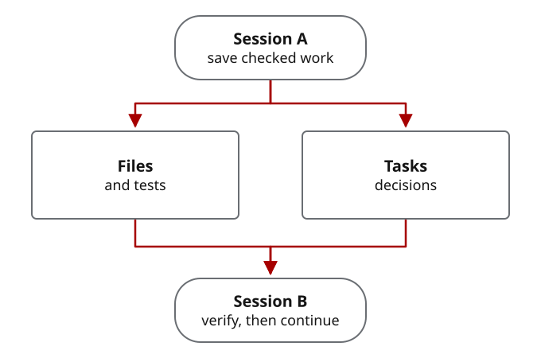

Read the project before starting a successor
A new session needs the current files, accepted decisions and ready tasks. Beads Memory is the durable task graph around that work: save evidence and closure-memory comments so another person, spawned agents or compacted sessions can inspect the same state.
Inputs: the project checkout, HANDOFF.md, task IDs and their evidence. Result: a verified starting point and either a ready successor, blocked work, or completed scope with no successor.
Inspect the actual work record
For the documentation-audit CLI case, the contract task is complex-work-orchestration-jtz4.11.1, implementation is complex-work-orchestration-jtz4.11.2, and independent review disposition is complex-work-orchestration-jtz4.11.3. These are recorded local tasks, not IDs generated by an example script. Their local database is not distributed with the source; the saved case handoff is the portable inspection artifact. Use your own project IDs for live Beads commands.
Long commands keep their original lines. If a line continues beyond the edge, scroll inside its code block; select the text to copy it.
Terminal
cd /path/to/your/project
pwd
git status --short
cat HANDOFF.md
bd list --all
bd ready --json
bd show TASK_ID --jsonReplace the directory and task ID with the actual project values. Expected: the source, handoff and task agree on accepted behavior, current changes and remaining work. An empty ready list can mean prerequisites are incomplete or the authorized scope is already complete. Do not infer permission from a task being ready.
What the next session can recover

Verify before changing anything
Use the project’s own README and saved commands. For the CLI case, from the CWO source checkout containing this change:
Terminal
python3 -m unittest discover -s tests -p test_documentation_cli.py -v
python3 scripts/check_documentation.py --jsonExpected: eleven focused tests pass and the report has version: 1, ok: true, and an empty errors list. A stale report is not a current check. Confirm task prerequisites before selecting a successor.
Keep the decision with its evidence
A useful closure record names the change, accepted behavior, actual checks, owner decision, residual risk and next action. In the CLI case, independent review found an encoding failure missed by the original in-memory test. The accepted decision was default JSON escaping plus an actual forced-ASCII subprocess regression—not weaker Unicode requirements.
Save a meaningful record before closing important work. Exact helper fields are in the durable-memory reference.
Give the next assignment enough context
Use the accepted contract, direct dependencies, relevant files and decisive evidence. Do not send the whole project merely because it exists. Preserve uncertainty and source revision so a fresh reader can recheck the result.
Internal briefs are separate from outside contractor packets: outside reviewers receive packets minimized to the approved sharing boundary, not the whole work record.